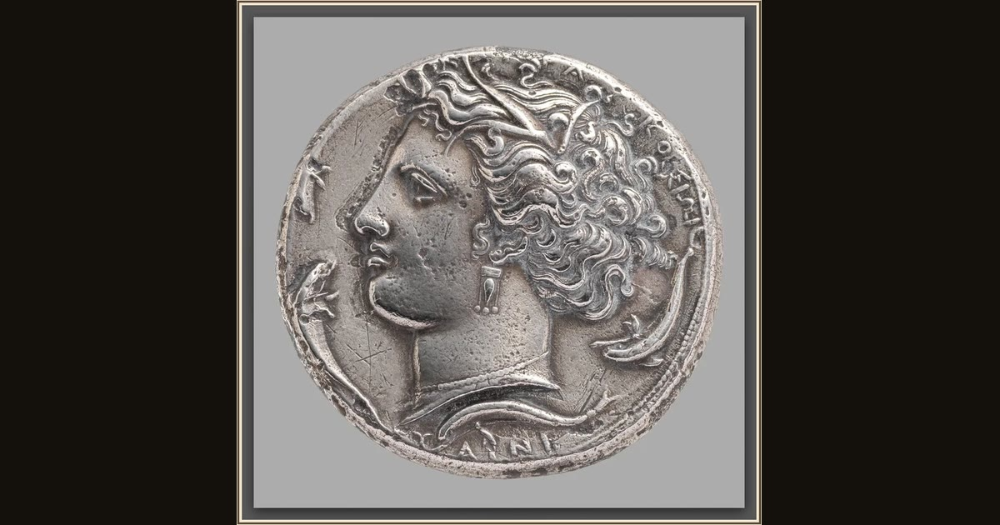

Silver dekadrachm
Euainetos; Greek, Sicilian, Syracuse · 400–390 BCE · met
A Syracusan silver dekadrachm by Euainetos shows a profile head and dates to 400–390 BCE, after Nicias hoped the siege would exhaust Syracuse's funds (7.48.2). Explore its place in Thucydides's History of the Peloponnesian War, Book VII, chapter 192.